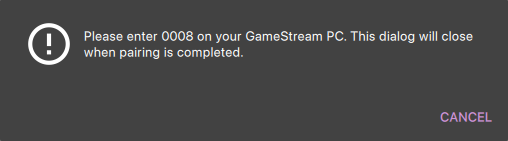
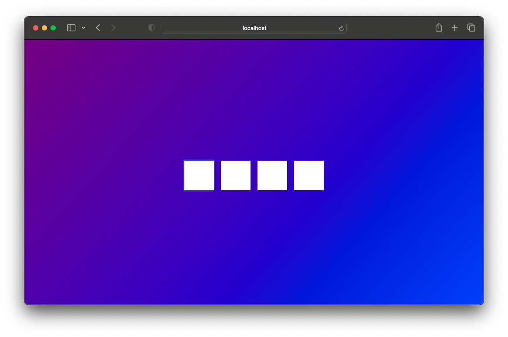
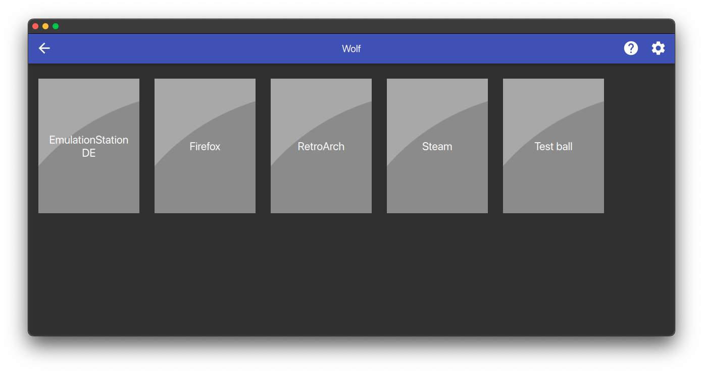

Quickstart
Wolf runs as a single container, it’ll spin up and down additional containers on-demand.
Docker
-
Intel/AMD
-
Nvidia (Container Toolkit)
-
Nvidia (Manual)
-
WSL2
-
Proxmox LXC
-
Podman Quadlets
Docker CLI:
docker run \
--name wolf \
--network=host \
-v /etc/wolf:/etc/wolf:rw \
-v /var/run/docker.sock:/var/run/docker.sock:rw \
--device /dev/dri/ \
--device /dev/uinput \
--device /dev/uhid \
-v /dev/:/dev/:rw \
-v /run/udev:/run/udev:rw \
--device-cgroup-rule "c 13:* rmw" \
ghcr.io/games-on-whales/wolf:stableDocker compose:
version: "3"
services:
wolf:
image: ghcr.io/games-on-whales/wolf:stable
volumes:
- /etc/wolf/:/etc/wolf
- /var/run/docker.sock:/var/run/docker.sock:rw
- /dev/:/dev/:rw
- /run/udev:/run/udev:rw
device_cgroup_rules:
- 'c 13:* rmw'
devices:
- /dev/dri
- /dev/uinput
- /dev/uhid
network_mode: host
restart: unless-stopped|
This isn’t recommended at the moment as it’s not as stable as the manual method. |
|
Make sure that the version of the Nvidia container toolkit is |
Docker CLI:
docker run \
--name wolf \
--network=host \
-v /etc/wolf:/etc/wolf:rw \
-v /var/run/docker.sock:/var/run/docker.sock:rw \
-e NVIDIA_DRIVER_CAPABILITIES=all \
-e NVIDIA_VISIBLE_DEVICES=all \
--gpus=all \
--device /dev/dri/ \
--device /dev/uinput \
--device /dev/uhid \
-v /dev/:/dev/:rw \
-v /run/udev:/run/udev:rw \
--device-cgroup-rule "c 13:* rmw" \
ghcr.io/games-on-whales/wolf:stableDocker compose:
version: "3"
services:
wolf:
image: ghcr.io/games-on-whales/wolf:stable
environment:
- NVIDIA_DRIVER_CAPABILITIES=all
- NVIDIA_VISIBLE_DEVICES=all
volumes:
- /etc/wolf/:/etc/wolf
- /var/run/docker.sock:/var/run/docker.sock:rw
- /dev/:/dev/:rw
- /run/udev:/run/udev:rw
device_cgroup_rules:
- 'c 13:* rmw'
devices:
- /dev/dri
- /dev/uinput
- /dev/uhid
deploy:
resources:
reservations:
devices:
- driver: nvidia
count: all
capabilities: [gpu]
network_mode: host
restart: unless-stoppedOne last final check: we have to make sure that the nvidia-drm module has been loaded and that the module is loaded with the flag modeset=1.
sudo cat /sys/module/nvidia_drm/parameters/modeset
YI get N or the file is not present, how do I set the flag?
If using Grub, the easiest way to make the change persistent is to add nvidia-drm.modeset=1 to the GRUB_CMDLINE_LINUX_DEFAULT line in /etc/default/grub ex:
GRUB_CMDLINE_LINUX_DEFAULT="quiet nvidia-drm.modeset=1"
Then sudo update-grub and reboot.
|
The downside of this method is that you have to manually re-create the Nvidia driver volume every time you update the drivers. |
Unfortunately, on Nvidia, things are a little bit more complex..
Make sure that your driver version is >= 530.30.02
First, let’s build an additional docker image that will contain the Nvidia driver files:
curl https://raw.githubusercontent.com/games-on-whales/gow/master/images/nvidia-driver/Dockerfile | docker build -t gow/nvidia-driver:latest -f - --build-arg NV_VERSION=$(cat /sys/module/nvidia/version) .This will create gow/nvidia-driver:latest locally.
Unfortunately, docker doesn’t seem to support directly mounting images, but you can pre-polulate volumes by running:
docker create --rm --mount source=nvidia-driver-vol,destination=/usr/nvidia gow/nvidia-driver:latest shIt will create a Docker container, populate nvidia-driver-vol with Nvidia driver if it wasn’t already done and remove the container.
If the volume previously existed with older drivers, you may need to remove it before re-creating the volume with newer drivers: docker volume rm nvidia-driver-vol.
Check volume exists with:
docker volume ls | grep nvidia-driver
local nvidia-driver-volOne last final check: we have to make sure that the nvidia-drm module has been loaded and that the module is loaded with the flag modeset=1.
sudo cat /sys/module/nvidia_drm/parameters/modeset
YI get N or the file is not present, how do I set the flag?
If using Grub, the easiest way to make the change persistent is to add nvidia-drm.modeset=1 to the GRUB_CMDLINE_LINUX_DEFAULT line in /etc/default/grub ex:
GRUB_CMDLINE_LINUX_DEFAULT="quiet nvidia-drm.modeset=1"
Then sudo update-grub and reboot.
For more options or details, you can see ArchWiki: Kernel parameters
You can now finally start the container; Docker CLI:
docker run \
--name wolf \
--network=host \
-e NVIDIA_DRIVER_VOLUME_NAME=nvidia-driver-vol \
-v nvidia-driver-vol:/usr/nvidia:rw \
-v /etc/wolf:/etc/wolf:rw \
-v /var/run/docker.sock:/var/run/docker.sock:rw \
--device /dev/nvidia-uvm \
--device /dev/nvidia-uvm-tools \
--device /dev/dri/ \
--device /dev/nvidia-caps/nvidia-cap1 \
--device /dev/nvidia-caps/nvidia-cap2 \
--device /dev/nvidiactl \
--device /dev/nvidia0 \
--device /dev/nvidia-modeset \
--device /dev/uinput \
--device /dev/uhid \
-v /dev/:/dev/:rw \
-v /run/udev:/run/udev:rw \
--device-cgroup-rule "c 13:* rmw" \
ghcr.io/games-on-whales/wolf:stableDocker compose:
version: "3"
services:
wolf:
image: ghcr.io/games-on-whales/wolf:stable
environment:
- NVIDIA_DRIVER_VOLUME_NAME=nvidia-driver-vol
volumes:
- /etc/wolf/:/etc/wolf:rw
- /var/run/docker.sock:/var/run/docker.sock:rw
- /dev/:/dev/:rw
- /run/udev:/run/udev:rw
- nvidia-driver-vol:/usr/nvidia:rw
devices:
- /dev/dri
- /dev/uinput
- /dev/uhid
- /dev/nvidia-uvm
- /dev/nvidia-uvm-tools
- /dev/nvidia-caps/nvidia-cap1
- /dev/nvidia-caps/nvidia-cap2
- /dev/nvidiactl
- /dev/nvidia0
- /dev/nvidia-modeset
device_cgroup_rules:
- 'c 13:* rmw'
network_mode: host
restart: unless-stopped
volumes:
nvidia-driver-vol:
external: trueIf you are missing any of the /dev/nvidia* devices you might also need to initialise them using:
sudo nvidia-container-cli --load-kmods infoOr if that fails:
#!/bin/bash
## Script to initialize nvidia device nodes.
## https://docs.nvidia.com/cuda/cuda-installation-guide-linux/index.html#runfile-verifications
/sbin/modprobe nvidia
if [ "$?" -eq 0 ]; then
# Count the number of NVIDIA controllers found.
NVDEVS=`lspci | grep -i NVIDIA`
N3D=`echo "$NVDEVS" | grep "3D controller" | wc -l`
NVGA=`echo "$NVDEVS" | grep "VGA compatible controller" | wc -l`
N=`expr $N3D + $NVGA - 1`
for i in `seq 0 $N`; do
mknod -m 666 /dev/nvidia$i c 195 $i
done
mknod -m 666 /dev/nvidiactl c 195 255
else
exit 1
fi
/sbin/modprobe nvidia-uvm
if [ "$?" -eq 0 ]; then
# Find out the major device number used by the nvidia-uvm driver
D=`grep nvidia-uvm /proc/devices | awk '{print $1}'`
mknod -m 666 /dev/nvidia-uvm c $D 0
mknod -m 666 /dev/nvidia-uvm-tools c $D 0
else
exit 1
fiI am still not able to see all the Nvidia devices
You may need to setup your host to automatically load the NVIDIA GPU Kernel modules at boot time.
First, create a new file nvidia.conf in the /etc/modules-load.d/ directory and open it with a text editor.
nano /etc/modules-load.d/nvidia.conf
paste the following content to the file:
nvidia
nvidia_uvmFor the changes to take effect, update the initramfs file with the following command:
update-initramfs -u
Add udev rules to add missing Nvidia devices
nano /etc/udev/rules.d/70-nvidia.rules
paste the following content to the file:
# create necessary NVIDIA device files in /dev/*
KERNEL=="nvidia", RUN+="/bin/bash -c '/usr/bin/nvidia-smi -L && /bin/chmod 0666 /dev/nvidia*'"
KERNEL=="nvidia_uvm", RUN+="/bin/bash -c '/usr/bin/nvidia-modprobe -c0 -u && /bin/chmod 0666 /dev/nvidia-uvm*'"reboot you host and try running ls -l /dev/nvidia* again.
|
Running Wolf in WSL2 hasn’t been properly tested. |
You can run Wolf in a very unprivileged setting without uinput/uhid, unfortunately this means that you’ll be restricted to only using mouse and keyboard.
|
For Nvidia users, follow the Nvidia instructions above. This should work for AMD/Intel users. |
docker run \
--name wolf \
--network=host \
-v /etc/wolf:/etc/wolf:rw \
-v /var/run/docker.sock:/var/run/docker.sock:rw \
--device /dev/dri/ \
ghcr.io/games-on-whales/wolf:stable|
At the moment it is only possible to run Wolf inside a privileged LXC. |
First you need to make sure your GPU drivers are installed and loaded on your PVE host.
Also make sure to add the virtual devices udev rules to the PVE host as explained in the Virtual devices support section.
Enter the LXC config file: nano /etc/pve/lxc/1XX.conf
Add these lines to the bottom of the file:
For Nvidia
dev0: /dev/uinput
dev1: /dev/uhid
dev2: /dev/nvidia0
dev3: /dev/nvidiactl
dev4: /dev/nvidia-modeset
dev5: /dev/nvidia-uvm
dev6: /dev/nvidia-uvm-tools
dev7: /dev/nvidia-caps/nvidia-cap1
dev8: /dev/nvidia-caps/nvidia-cap2
lxc.cgroup2.devices.allow: a
lxc.cap.drop:
lxc.mount.entry: /dev/dri dev/dri none bind,optional,create=dir
lxc.mount.entry: /run/udev mnt/udev none bind,optional,create=dir
lxc.mount.entry: /dev mnt/dev none bind,optional,create=dirFor Intel/AMD
dev0: /dev/uinput
dev1: /dev/uhid
lxc.cgroup2.devices.allow: a
lxc.cap.drop:
lxc.mount.entry: /dev/dri dev/dri none bind,optional,create=dir
lxc.mount.entry: /run/udev mnt/udev none bind,optional,create=dir
lxc.mount.entry: /dev mnt/dev none bind,optional,create=dirsave the file, exit, and restart your LXC.
Your LXC is good to go, complete the installation based on the GPU following the other tabs.
|
When creating your docker-compose.yml don’t forget to modify the volume mappings for |
volumes:
- /mnt/udev:/run/udev:rw
- /mnt/dev:/dev:rwAnd if you have a multi GPU setup, don’t forget to set the below env variable
environment:
- WOLF_RENDER_NODE=/dev/dri/renderD12XThe easiest way to run Wolf is to use a rootful service, this isn’t a strict requirement; if you give access to the /dev/dri devices, /etc/wolf and install the required udev rules everything should work.
Place your wolf.container file (populated with either the Nvidia or Intel/AMD examples below) in /etc/containers/systemd, then run sudo systemctl daemon-reload and sudo systemctl start wolf.service to start Wolf.
Nvidia
This example is based on Nvidia (Manual), you will need to create the Nvidia volume first before starting the service:
1. Create a new image that will contain the Nvidia driver files:
sudo curl https://raw.githubusercontent.com/games-on-whales/gow/master/images/nvidia-driver/Dockerfile | sudo podman build -t gow/nvidia-driver:latest -f - --build-arg NV_VERSION=$(cat /sys/module/nvidia/version) .2. Mount the image and create the new volume:
sudo podman create --rm --mount source=nvidia-driver-vol,destination=/usr/nvidia gow/nvidia-driver:latest shCheck volume exists with:
sudo podman volume ls | grep nvidia-driver
local nvidia-driver-vol3. This is an additional step for Podman. Start the temporary container you just created. sudo podman ps -a will show a container using a temporary name (e.g. musing_pascal) and your local gow/nvidia-driver image. Only once this container is started will your new volume be populated. Run:
sudo podman start musing_pascalYou can verify the contents of of your nvidia-driver-vol by running sudo podman volume inspect nvidia-driver-vol and then browsing the Mountpoint: sudo ls -la /var/lib/containers/storage/volumes/nvidia-driver-vol/_data. You should see a non empty folder:
total 12
drwxr-xr-x. 6 root root 54 Oct 27 22:06 .
drwx------. 3 root root 19 Oct 28 14:40 ..
drwxr-xr-x. 2 root root 4096 Oct 27 22:06 bin
drwxr-xr-x. 5 root root 4096 Oct 28 14:44 lib
drwxr-xr-x. 4 root root 4096 Oct 27 22:06 lib32
drwxr-xr-x. 7 root root 77 Oct 27 22:07 share4. Use the example below to create a wolf.container file in /etc/containers/systemd, then run sudo systemctl daemon-reload and sudo systemctl start wolf.service to start.
[Unit]
Description=Wolf / Games On Whales
Requires=network-online.target podman.socket
After=network-online.target podman.socket
[Service]
TimeoutStartSec=900
ExecStartPre=-/usr/bin/podman rm --force WolfPulseAudio
Restart=on-failure
RestartSec=5
StartLimitBurst=5
[Container]
AutoUpdate=registry
ContainerName=%p
HostName=%p
Image=ghcr.io/games-on-whales/wolf:stable
Network=host
SecurityLabelDisable=true
PodmanArgs=--ipc=host --device-cgroup-rule "c 13:* rmw"
AddDevice=/dev/dri
AddDevice=/dev/uinput
AddDevice=/dev/uhid
AddDevice=/dev/nvidia-uvm
AddDevice=/dev/nvidia-uvm-tools
AddDevice=/dev/nvidia-caps/nvidia-cap1
AddDevice=/dev/nvidia-caps/nvidia-cap2
AddDevice=/dev/nvidiactl
AddDevice=/dev/nvidia0
AddDevice=/dev/nvidia-modeset
Volume=nvidia-driver-vol:/usr/nvidia
Volume=/dev/:/dev/:rw
Volume=/run/udev:/run/udev:rw
Volume=/etc/wolf/:/etc/wolf:z
Volume=/run/podman/podman.sock:/var/run/docker.sock:ro
Environment=WOLF_STOP_CONTAINER_ON_EXIT=TRUE
Environment=NVIDIA_DRIVER_VOLUME_NAME=nvidia-driver-vol
Environment=WOLF_RENDER_NODE=/dev/dri/renderD129
[Install]
WantedBy=multi-user.targetThe service won’t start due to missing devices (e.g. /dev/nvidia-modeset)
Using uCore (CoreOS), I needed to start Nvidia persistenced to get all the required devices in place:
sudo systemctl enable --now nvidia-persistenced.serviceOne last final check: we have to make sure that the nvidia-drm module has been loaded and that the module is loaded with the flag modeset=1.
sudo cat /sys/module/nvidia_drm/parameters/modeset
YMultiple GPUs / finding the device ID for WOLF_RENDER_NODE
If you have a multi GPU setup, you need to set the WOLF_RENDER_NODE environmnet variable to the correct card. You can find a list of attached graphics cards with:
ls -l /sys/class/drm/renderD*/device/driver
lrwxrwxrwx. 1 root root 0 Oct 29 19:44 /sys/class/drm/renderD128/device/driver -> ../../../bus/pci/drivers/i915
lrwxrwxrwx. 1 root root 0 Oct 29 19:44 /sys/class/drm/renderD129/device/driver -> ../../../../bus/pci/drivers/nvidiaIntel/AMD
1. Use the example below to create a wolf.container file in /etc/containers/systemd, then run sudo systemctl daemon-reload and sudo systemctl start wolf.service to start.
[Unit]
Description=Wolf / Games On Whales
Requires=network-online.target podman.socket
After=network-online.target podman.socket
[Service]
TimeoutStartSec=900
ExecStartPre=-/usr/bin/podman rm --force WolfPulseAudio
Restart=on-failure
RestartSec=5
StartLimitBurst=5
[Container]
AutoUpdate=registry
ContainerName=%p
HostName=%p
Image=ghcr.io/games-on-whales/wolf:stable
Network=host
SecurityLabelDisable=true
PodmanArgs=--ipc=host --device-cgroup-rule "c 13:* rmw"
AddDevice=/dev/dri
AddDevice=/dev/uinput
AddDevice=/dev/uhid
Volume=/dev/:/dev/:rw
Volume=/run/udev:/run/udev:rw
Volume=/etc/wolf/:/etc/wolf:z
Volume=/run/podman/podman.sock:/var/run/docker.sock:ro
Environment=WOLF_STOP_CONTAINER_ON_EXIT=TRUE
[Install]
WantedBy=multi-user.targetIssues with Podman socket or Podman socket missing
Make sure your Podman socket service is running with sudo systemctl enable --now podman.socket and verify it has started correctly with sudo systemctl status podman.socket. The output should look like this:
● podman.socket - Podman API Socket
Loaded: loaded (/usr/lib/systemd/system/podman.socket; enabled; preset: disabled)
Active: active (listening) since Wed 2025-10-29 19:44:24 CET; 13min ago
Invocation: d15ecfcbb2b04de49af1c977925982e9
Triggers: ● podman.service
Docs: man:podman-system-service(1)
Listen: /run/podman/podman.sock (Stream)
CGroup: /system.slice/podman.socketMake a note of where the socket is running (e.g /run/podman/podman.sock in the example above) and update your wolf.container if necessary.
Which ports are used by Wolf?
To keep things simple the scripts above defaulted to network:host; that’s not really required, the minimum set of ports that needs to be exposed are:
# HTTPS
EXPOSE 47984/tcp
# HTTP
EXPOSE 47989/tcp
# Control
EXPOSE 47999/udp
# RTSP
EXPOSE 48010/tcp
# Video
EXPOSE 48100/udp
# Audio
EXPOSE 48200/udpThese are the default values, if you want to assign custom ports you can set the env variables:
-
WOLF_HTTP_PORT -
WOLF_HTTPS_PORT -
WOLF_CONTROL_PORT -
WOLF_RTSP_SETUP_PORT -
WOLF_VIDEO_PING_PORT -
WOLF_AUDIO_PING_PORT
Moonlight pairing
You should now be able to point Moonlight to the IP address of the server and start the pairing process:
-
In Moonlight, you’ll get a prompt for a PIN

-
Wolf will log a line with a link to a page where you can input that PIN (ex: http://localhost:47989/pin/#337327E8A6FC0C66 make sure to replace
localhostwith your server IP)
-
In Moonlight, you should now be able to see a list of the applications that are supported by Wolf, the default entrypoint is Wolf UI

|
If you can only see a black screen with a cursor in Moonlight it’s because the first time that you start an app Wolf will download the corresponding docker image + first time updates. |
Virtual devices support
We use uinput to create virtual Joypad devices, make sure that /dev/uinput is present in the host:
ls -la /dev/uinput
crw------- 1 root root 10, 223 Jan 17 09:08 /dev/uinputudev rules under /etc/udev/rules.d/85-wolf-virtual-inputs.rules# Allows Wolf to acces /dev/uinput (only needed for joypad support)
KERNEL=="uinput", SUBSYSTEM=="misc", MODE="0660", GROUP="input", OPTIONS+="static_node=uinput", TAG+="uaccess"
# Allows Wolf to access /dev/uhid (only needed for DualSense emulation)
KERNEL=="uhid", GROUP="input", MODE="0660", TAG+="uaccess"
# Joypads
KERNEL=="hidraw*", ATTRS{name}=="Wolf PS5 (virtual) pad", GROUP="root", MODE="0660", ENV{ID_SEAT}="seat9"
SUBSYSTEMS=="input", ATTRS{name}=="Wolf X-Box One (virtual) pad", GROUP="root", MODE="0660", ENV{ID_SEAT}="seat9"
SUBSYSTEMS=="input", ATTRS{name}=="Wolf PS5 (virtual) pad", GROUP="root", MODE="0660", ENV{ID_SEAT}="seat9"
SUBSYSTEMS=="input", ATTRS{name}=="Wolf gamepad (virtual) motion sensors", GROUP="root", MODE="0660", ENV{ID_SEAT}="seat9"
SUBSYSTEMS=="input", ATTRS{name}=="Wolf Nintendo (virtual) pad", GROUP="root", MODE="0660", ENV{ID_SEAT}="seat9"Reload the udev rules either by rebooting or run:
udevadm control --reload-rules && udevadm triggerAlso restart Wolf container if it’s already running.